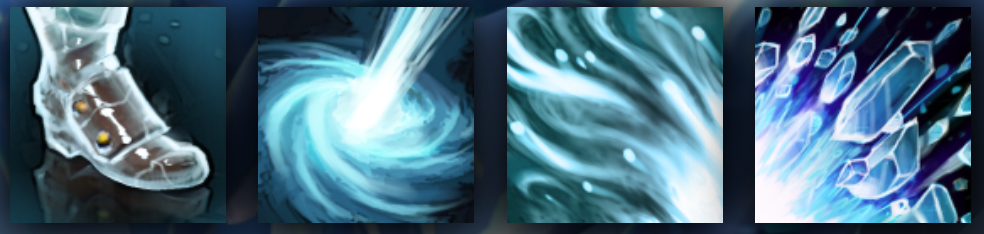

ANCIENT APPARITION
LAUNCHES A POWERFUL ICY BLAST FROM ANYWHERE ON THE MAP
HISTORY
Kaldr, the Ancient Apparition, is an image projected from outside time. He springs from the cold, infinite void that both predates the universe and awaits its end. Kaldr is, Kaldr was, Kaldr shall be...and what we perceive, powerful as it appears to us, is but the faintest faded echo of the true, eternal Kaldr. Some believe that as the cosmos ages and approaches its final moments, the brightness and power of Kaldr will also intensify--that the Ancient Apparition will grow younger and stronger as eternity's end draws nigh. His grip of ice will bring all matter to a stop, his image will cast a light too terrible to behold. An Apparition no longer!
ABILITIES
PAIRD WELL WITH
AXE
LUNA
SVEN